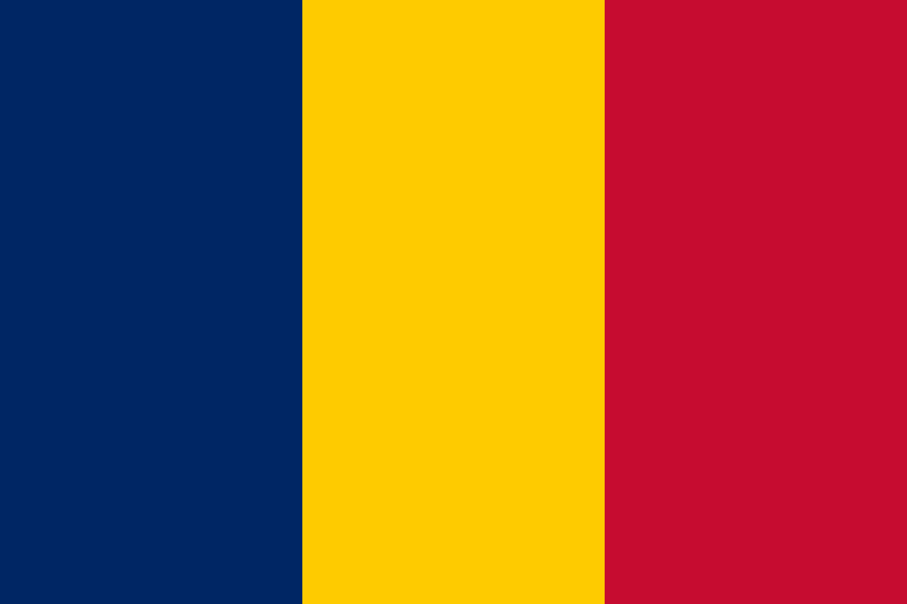
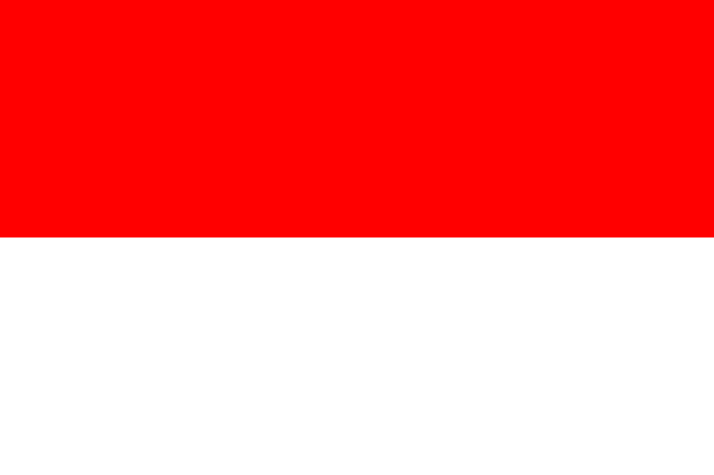
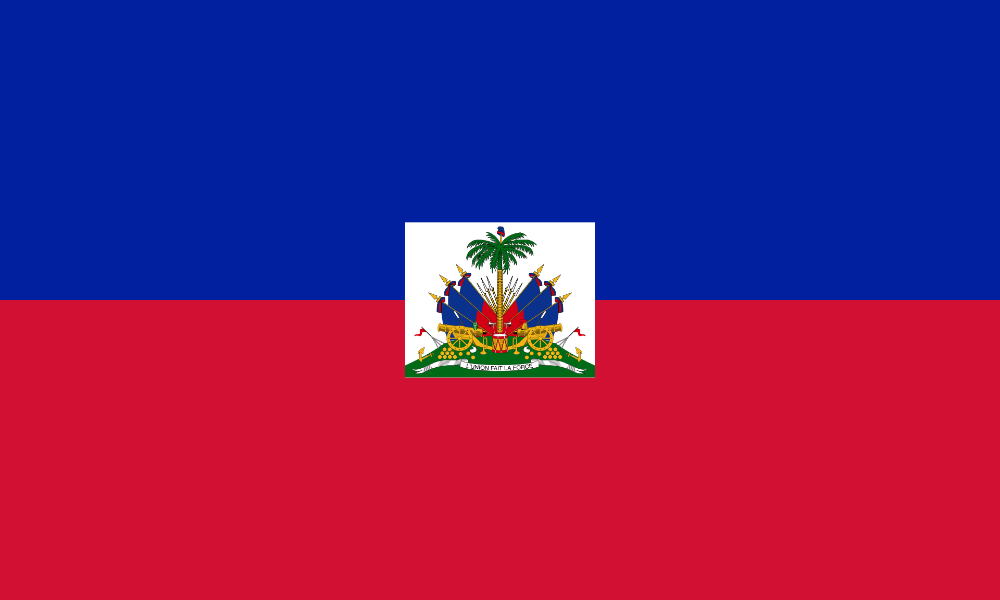
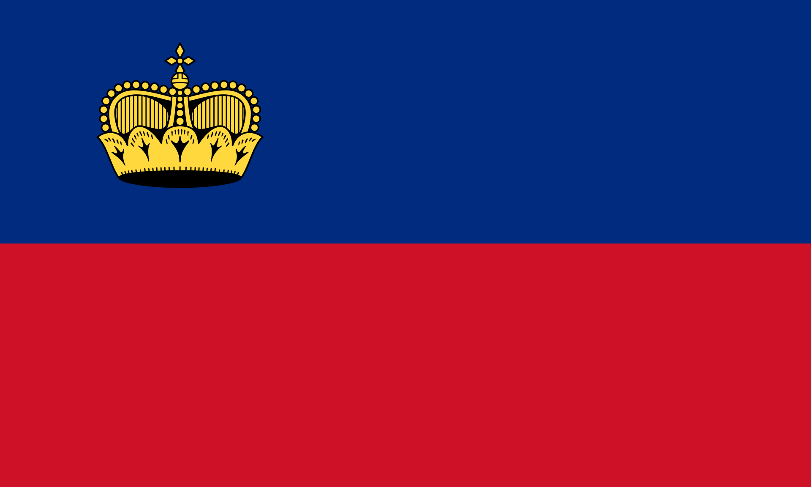

Not unique Flags

Chad and Romania
The best example of this would be the flags of Chad and Romania… who have basically the exact same flag. Romania had the flag first, being originally adopted in 1867, and then re-adopted in 1989. In between, the flag featured the Romanian coat of arms in the middle. Speaking of coats of arms, this flag is also extremely similar to the flag of Andorra. If we just add the Andorran coat of arms then we have their flag - also a blue, yellow, and red tricolour.
Monaco and Indonesia
Another example of this is the countries of Monaco and Indonesia. Two countries that arguably couldn’t be more different, yet have the exact same flag - half red, half white. In this case, Monaco had the flag first, having been in use since 1881, based on the Royal House of Monaco. Indonesia adopted the flag in 1945 upon its independence. Monaco was unhappy about this and complained about the use of an identical flag… but they were pretty much ignored, apparently. To make matters worse… add a moon and some stars and you’ve got the flag of Singapore; or turn it upside down and you’ve got the flag of Poland. Far from distinct, these flags.
 Haiti and Liechtenstein
There actually used to be another two countries whose flags were exactly the same, but have since been changed. Haiti and Liechtenstein both used a horizontal blue and red flag. Completely identical. This wasn’t discovered until the opening ceremony of the 1936 Olympic Games, where the coincidence was first noticed. Liechtenstein added a crown to the top-left of their flag to distinguish it from Haiti’s. Haiti also made an addition of their coat of arms on a white square to the middle of their flag.